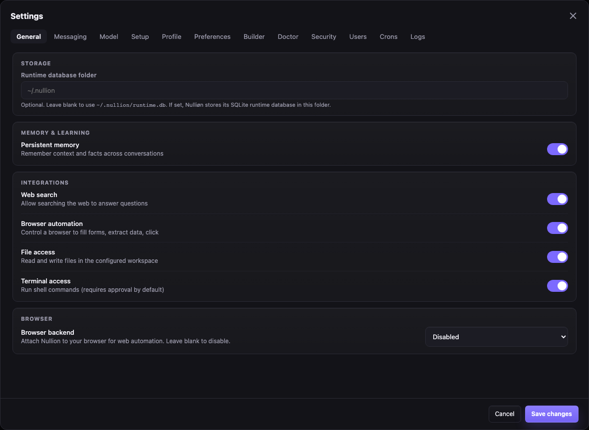
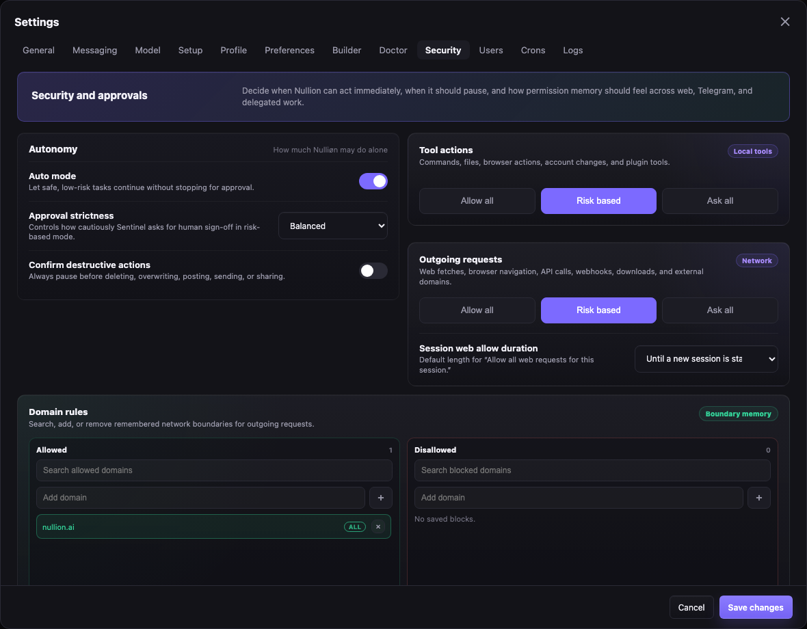

Operation, target, output contract, preferred tools, workspace owner, delivery mode, and finish criteria survive follow-ups.
Local-first AI operator
Nulliøn.ai
A self-hosted AI operator that runs multiple tasks in parallel, keeps approvals and schedules scoped to the right workspace, fixes itself when something breaks, gives you an out-of-band recovery path when the main app is down, builds its own skills from your conversations, and asks before it acts on anything sensitive.
Validated planner · warm pool
Self-healing · Recovery
Workspace-scoped grants
Telegram · Slack · Discord

Warm pool5 pre-warmed agents, parallel dispatch
RecoveryDoctor probes · service restart · Telegram takeover
BuilderWatches conversations, proposes skills
Sentinel3 approval modes, workspace-aware grants
Self-updatePip snapshot + rollback if health fails
Internal functioning
The parts that keep autonomy bounded.
Nulliøn is not a single chat loop with a pile of tools. It keeps separate records for intent, policy, runtime health, tool boundaries, and reusable skills, so fast work and careful control can exist in the same system.
Runtime core
Conversation owner
Owns the active task frame, merges mini-agent results, writes history, and decides when a mission is complete.
Bounded subtasks run in parallel with isolated context and tool scope, then report back to the aggregator.
Capability grants and resource boundaries are checked separately before every tool call executes.
Health probes watch adapters, plugins, scheduler, browser backend, model client, database, and warm pool.
Repeated patterns become skill proposals; low-signal memory gets compacted so context stays useful.
Approvals, denials, grants, health actions, artifacts, schedules, and tool results stay visible and revocable.
The model can reason, but the runtime owns the typed task frame and completion state.
Mini-agents get bounded DAG steps; one approval wait does not freeze the whole mission.
Tools, destinations, file roots, accounts, and destructive actions are checked before execution.
Doctor retries safe recovery first, then surfaces a clear action card when human help is needed.
Fresh product screenshots
Planner cards, media artifacts, approvals, and recovery in one operator console.
Browse the local console surfaces people use day to day: mission chat, planner-only or full verbose visibility, image artifacts, approval queue, health actions, learned workflows, schedules, and runtime controls.


{kind=link}

{kind=link}

Why Nulliøn.ai
Autonomy without losing control.
Nulliøn is built to handle real work at real scale — multiple tasks in parallel, automatic recovery when things break, a break-glass control plane when the main app is down, and skills that grow from your own conversations. Every action has context, every decision stays yours to approve or revoke.
Features
An operator that works in parallel and heals itself.
Multiple tasks run concurrently across a warm agent pool. Doctor monitors every subsystem, and the recovery control plane gives you a separate way back in if web or chat adapters go down. Builder learns your patterns and proposes skills without you asking.
Parallel multi-agent execution
Complex requests are decomposed into sub-tasks and dispatched across a warm pool of pre-warmed agents simultaneously. A result aggregator collects completions and streams updates back in real time. No waiting for one task to finish before the next starts.
Doctor: self-healing runtime
Doctor runs continuous background health probes on every subsystem — model client, plugin registry, cron scheduler, database, Telegram connection. On failure it attempts automatic recovery: reconnects, reloads, restarts. If the main runtime is down, nullion-recovery still gives you a way to inspect and restart services.
Out-of-band recovery
A tiny recovery control plane can run outside the main app. It lists service status, restarts web/Telegram/Slack/Discord, snapshots local config, restores runtime backups, and can temporarily take over Telegram commands when the normal adapter is down.
Builder: auto-proposes skills
Builder watches every conversation for repeated patterns and proposes reusable skill definitions without you asking. Run /auto-skill, accept what fits, and Nulliøn applies that skill to every matching future request — versioned and revertible.
Sentinel approvals
Risk-based by default — low-risk reads auto-proceed, sensitive actions pause for your approval. Three modes: risk-based, ask-all, or allow-all. Workspace-aware grants: grant a tool once, only re-prompted when crossing a new destination, account, file scope, or workspace.
Plugin system
Extend Nulliøn with email, calendar, browser automation, workspace files, Slack, Discord, media tools, and custom skill packs. Plugins and auth-required skills bind to providers you control; instruction-only skills stay available without credentials, and active connector providers can be tried when a native account provider fails.
Telegram, Slack & Discord
Slash commands and inline approval cards from anywhere. Telegram is built-in; Slack (Socket Mode) and Discord adapters are live. Approve, revoke, manage skills, and check health from your phone without opening a browser.
Task frame continuity
Every request stores a typed task frame — operation, target, output contract, execution mode, workspace owner, delivery method, finish criteria. Follow-ups inherit the active frame. "And this one too" works because Nulliøn carries your intent, not just recent chat text.
Rollback-safe self-update
Before every update: pip freeze snapshot + git commit of current state. After pulling: full health check runs automatically. If anything fails, Nulliøn restores itself from the snapshot. No broken state, no manual recovery.
Scheduled missions
Natural-language cron tasks run as full operator requests with the same approval flow, tool access, skill context, workspace owner, and delivery channel as live chat. Web, Telegram, Slack, and Discord schedules route back to the right place.
Workspace ownership
Approvals, grants, schedules, memory, delivery targets, and provider connections stay attached to the initiating workspace. A member's Gmail, files, and approvals do not silently fall back to the admin account unless an admin deliberately shares a supported credential.
Under the hood
The architecture that makes it real.
Four systems that separate Nulliøn from a chatbot with a tool list: a multi-agent concurrency layer, a self-healing runtime, an out-of-band recovery path, and a skill engine that gets smarter with use.
Warm pool · parallel execution
Multi-step requests are decomposed into validated task plans and dispatched across a pool of pre-warmed asyncio agents. Each agent runs its own tool loop. The result aggregator drains the progress queue and can stream planner cards, completions, learned-skill usage, and tool summaries back in real time.
→ task_decomposer: validated 3-step plan
→ warm_pool: 3 agents dispatched
agent #1web_fetch → aws pricing
agent #2web_fetch → azure pricing
agent #3APPROVAL_GATE → gcp pricing
→ result_aggregator: streaming updates
Doctor · self-healing loop
Doctor runs background health probes on every subsystem on a configurable interval. When a check fails it doesn't just alert — it attempts automatic recovery. If the app itself is down, the separate recovery control plane can still restart services and restore config or runtime backups.
✓ model_client: API key valid
✓ plugin_registry: 4 plugins loaded
✓ cron_scheduler: running, 2 jobs
✗ telegram: connection dropped
→ nullion-recovery: restart telegram ✓
→ telegram takeover: available if adapter is down
Builder · auto-proposes skills
Builder's background loop watches your conversations for patterns and proposes skills automatically — without you having to ask. Each proposal is versioned: accept it, tweak it, revert it. Once accepted, Nulliøn prepends the skill's instructions whenever the trigger matches, improving every future response for that task type.
detected3× "weekly summary" pattern
proposalweekly-summary · v1 · pending
→ /accept-skill 1 → saved, active
→ trigger: "weekly summary"
→ prepends skill context to every match
Mini-agent swarm
One request can become a whole crew.
Nulliøn does not have to grind through a mission in a single line. It can keep accepting work, split requests into bounded subtasks, show planner progress when you want it, send work to warm mini-agents, and merge the results back into one answer while Sentinel and Doctor watch the edges.
Incoming requests
Compare AWS, Azure, and GCP prices
Check staging health and logs
Draft the weekly investor update
Task frame + decomposer
Intent capsule
target · output · tools · workspace · finish criteria · risk route
Warm mini-agents
Agent 01 web fetch
Agent 02 browser check
Agent 03 repo scan
Agent 04 approval wait
Agent 05 doctor probe
Agent 06 summarizer
Result aggregator
Unified answer
citations, files, actions taken, blocked items, next steps
Sentinel grants, workspace ownership, and audit log stay attached to every tool call.
Screenshots
See every feature in context.
From Telegram approval cards to the web UI, plugin setup to skill building — here's what using Nulliøn actually looks like.
localhost:8742 — Active Agents · warm pool
Fetch the Stripe, GitHub, and Vercel status pages and summarise any active incidents
⌀
⚡ Decomposed → 3 sub-tasks · dispatching to warm pool (5 agents ready)…
Active Agents
Agent #1 · COMPLETED
stripe.com/status → No incidents · All systems operational
1.4s
Agent #2 · RUNNING
githubstatus.com → parsing response…
0.9s
Agent #3 · APPROVAL GATE
web_fetch → vercel-status.com · OUTBOUND_NETWORK · new boundary
✓ Allow
✓ Always allow
✗ Deny
Result aggregator
1 / 3 completed
localhost:8742 — Approvals
Pending Approvals
2 pending
MEDIUM RISK
terminal_exec · new boundary
Execute shell command
git log --oneline -10 ~/Projects/myapp
Requested by: assistant · 2 minutes ago
Approve
Deny
Always allow
LOW RISK
web_fetch · outbound
Fetch external URL
https://platform.openai.com/docs/models
Requested by: assistant · just now
Approve
Deny
ACTIVE GRANTS
web_fetch — platform.openai.com
Revoke
file_read — ~/Projects/**
Revoke
Telegram — Nulliøn Bot
/status
⌀
Nulliøn Status
🟢 Online · gpt-5.5
⏱ Uptime: 4h 12m
📋 Tasks: 0 active, 3 completed today
🛡 Approvals: 2 pending
📅 Next cron: Daily summary in 3h 48m
🟢 Online · gpt-5.5
⏱ Uptime: 4h 12m
📋 Tasks: 0 active, 3 completed today
🛡 Approvals: 2 pending
📅 Next cron: Daily summary in 3h 48m
Check my emails and tell me what needs attention today
⌀
⚙️ Using email_search…
⚠ Approval needed
email_search(query="today", max=30)
Risk level: LOW · email_plugin · new boundary
email_search(query="today", max=30)
Risk level: LOW · email_plugin · new boundary
✓ Approve
✓ Always allow
✗ Deny
💡 Quick commands: /approvals · /grants · /skills · /health · /update
localhost:8742 — Skills
Skills
+ New skill
⚡ Auto-suggest
✨ 2 new proposals from your recent conversations
Review →
weekly-summary
Check calendar, summarise completed tasks, and list open items every Sunday 6pm.
calendar_plugin
v3
Edit
History
email-triage
Scan inbox for unread emails needing replies. Categorise by urgency and draft response starters for high-priority items.
email_plugin
v1
Edit
History
PROPOSAL — from yesterday's conversations
standup-prep
Pull git log, open PRs, and calendar for today each morning at 9am and produce a 3-bullet standup summary.
Accept
Reject
Archive
localhost:8742 — Plugins
Plugins
🔍
ACTIVE
search_plugin
Web search + page fetch
builtin_search_provider
🌐
ACTIVE
browser_plugin
Browser sessions + screenshots
playwright
📁
ACTIVE
workspace_plugin
File and project tools
~/Projects
📧
PREVIEW
email_plugin
Search and read email
google_workspace_provider ← setup needed
📅
DISABLED
calendar_plugin
List calendar events
not configured
🎵
DISABLED
media_plugin
Audio, OCR, image gen
requires local provider
localhost:8742 — Schedules
Schedules
+ New schedule
Morning briefing
Check calendar, summarise any new emails, and list today's open tasks.
⏰ 0 8 * * 1-5
◦ Next run: tomorrow 08:00
◦ Last run: today 08:00 ✓
▶ Run now
Disable
Weekly summary
Generate weekly review: completed tasks, key decisions, and upcoming priorities. Save to ~/Documents/weekly/.
⏰ 0 18 * * 0
◦ Next run: Sun 18:00
◦ Last run: Sun ✓
▶ Run now
Disable
Expense reminder
paused
Remind me to submit weekly expenses every Friday at 4pm.
⏰ 0 16 * * 5
◦ Disabled
Enable
Delete
Sentinel security model
Useful autonomy with hard boundaries.
Sentinel is the policy layer around every tool call, account touch, file path, network destination, workspace boundary, and sensitive record. It keeps Nulliøn fast for ordinary work while making risky actions explicit, auditable, and revocable.
Sentinel approval modes
- Risk-based (default)
- Low-risk read-only tools run automatically. Medium and high-risk tools pause for approval on first use, then remember your answer as a grant for the relevant workspace and boundary. SSRF guard and path traversal protection stay active regardless.
- Ask-all
- Every tool call pauses for explicit approval, regardless of risk level or prior grants. Useful when you want maximum visibility over what Nulliøn is doing.
- Allow-all
- All tools run without approval. Hard safety boundaries (SSRF guard, path traversal, prompt injection sanitization) remain in place and cannot be disabled.
Data protection details
Chat history is stored in an encrypted SQLite database on your machine, with old plaintext rows migrated on startup. Likely API keys, bearer tokens, passwords, Slack tokens, GitHub tokens, and Telegram bot tokens are redacted before chat records are persisted and before logs are surfaced in the web UI.
No telemetry, remote logging, or cloud sync is built into the control plane. Secrets live in local config files with masked UI fields; provider connections keep references instead of exposing raw credential values in normal app state.
Capability grants are separate from resource boundaries, so a web tool grant does not automatically allow every domain and a file grant does not automatically allow every path.
SSRF checks resolve DNS before fetches and block private, loopback, link-local, and reserved addresses. Browser automation can enforce allowlists, blocklists, and private-network blocking.
Workspace tools resolve paths against allowed roots to block traversal. Skill pack archives validate member paths before extraction so imports cannot write outside the install directory.
Untrusted content is escaped before entering transcripts, cron descriptions are length-capped, and imported skill packs are scanned for suspicious shell and token patterns.
SQLite state, memory, skills, schedules, grants, and encrypted chat history live on your machine. The web control plane is designed for localhost operation.
Terminal, files, browser, network, email, calendar, and plugins are classified before execution. New scopes and destinations create approval checkpoints.
Every approval or denial becomes a workspace-aware, revocable record. Allow once, allow always, deny, or revoke later from the web console or phone.
Operator-visible logs and persisted chat records pass through secret redaction, while Doctor still keeps runtime health issues visible and actionable.
Open source release
Apache-2.0, local-first, and explicit about operator responsibility.
Nulliøn is released as open-source software under the Apache License 2.0. The current release lives at github.com/shumanhi/nullion, and the Python package namespace is nullion.
Nulliøn is provided without warranties. Operators choose the model providers, API keys, plugins, file roots, browser permissions, schedules, and approval modes they enable.
Security issues should go through GitHub Security Advisories. Public issues should not include exploit details, secrets, tokens, private URLs, or sensitive logs.
The control plane is built for localhost operation. Do not expose the web UI directly to the public internet.
Operator spaces
Simple for one person. Ready for trusted users.
Run Nulliøn as a personal console or invite trusted people into their own workspaces, each with separate memory, preferences, schedules, grants, and integrations.
Admin mode
You're the sole operator. Settings, security controls, channels, memory, schedules, and system health all in one clean console. No user management overhead. Self-discovering chat ID locks the bot to your phone on first message.
People mode
Invite sub-users into workspace-owned contexts with separate memory, approval history, grant sets, schedules, delivery targets, and personal provider connections while admin controls stay protected.
Workspace boundaries
Tool calls carry the workspace owner through Sentinel, provider resolution, file roots, and audit records. Crossing a new workspace, account, destination, or file scope asks again.
Personal context
Preferences become durable memory per person — compacted by Builder when sessions grow long. Global security, model, and channel settings remain admin-controlled and unchanged.
How it feels
One conversation, many surfaces.
-
1
Ask for a mission
Send a request from the web console or Telegram. Natural language, no special syntax. A task frame is created and carries your intent forward.
-
2
Review approvals
Sentinel pauses for new boundaries: sensitive tools, external destinations, account writes. Approve inline — web card or Telegram inline keyboard button.
-
3
Watch progress
Active tasks, tool calls, health status, and approved grants stay visible while Nulliøn runs. Doctor monitors all subsystems in the background.
-
4
Receive the result
Messages, files, summaries, and artifacts return to the channel that started the work. Follow-ups inherit the full task contract — no re-explaining needed.
Support the project
Buy me a coffee.
If Nulliøn saves you time, helps you ship, or just makes your local AI setup feel calmer, a small donation helps keep the project moving.
Support with PayPal
Every coffee goes back into builds, docs, testing, and the weirdly satisfying work of making autonomy less chaotic.
Documentation
Everything you need to get running.
Full reference for tools, plugins, slash commands, Sentinel, Builder, task frames, security model, and API.
🚀
Getting Started →
Install, configure, and run Nulliøn in under 10 minutes. First-run setup, Telegram onboarding, and auto-update explained.
🔧
Tools Reference →
All built-in tools: file, web, terminal, browser, email, calendar, media. Risk levels, boundary classes, and grant semantics explained.
🔌
Plugins →
Enable and configure plugins. Plugin catalog, provider bindings, media tool configuration, and building your own plugin.
⌨️
Slash Commands →
Full Telegram command reference: approvals, grants, skills, plugins, health, backups, system, and more.
🛡️
Sentinel →
Approval modes, permission grants, boundary policy, grant scopes, and the full approval flow from request to execution.
📡
API Reference →
REST endpoints for chat, approvals, skills, crons, system status, file upload, and health checks.
FAQ
Common questions
Is Nulliøn cloud-hosted?
Nulliøn is local-first. The operator console, memory, approvals, history, and runtime state stay on your machine in SQLite. It calls your selected model provider externally — but the orchestration, storage, and control plane are yours, localhost-only.
What is Sentinel and how does approval work?
Sentinel is the approval engine. It intercepts every tool call, checks it against your grant history and boundary policy, and either auto-approves, pauses for your approval, or blocks it. Low-risk reads auto-proceed; new network destinations, account writes, and shell commands pause. Each approval you give is stored as a grant and used for future calls — you can revoke any grant at any time from the web UI or Telegram.
Can I use it without Telegram?
Yes. The web console is a first-class surface with full approval UI, skills management, cron control, and chat history. Telegram is an optional operator adapter — convenient for approving actions from your phone, but not required.
What are task frames?
A task frame is a typed record of what you asked Nulliøn to do: the operation, target, output format, execution mode, workspace owner, delivery method, and finish criteria. Frames carry across follow-ups — if you say "and this one too" after a fetch request, Nulliøn substitutes the new target but inherits your preferred output format, tool, workspace, and delivery mode without you re-explaining.
How does the safe self-update work?
Before pulling updates, Nulliøn runs pip freeze and saves the current git commit. After the pull, it runs a full health check against the new version. If the check fails, it automatically restores the pip snapshot and reverts the git state. No update can leave Nulliøn in a broken state.
What if the web app or Telegram adapter is already down?
Use nullion-recovery. It is a separate control plane for status checks, service restarts, config snapshots, runtime backup restore, and Telegram takeover. If the normal Telegram adapter is down, recovery can temporarily poll the same bot token so you can send commands like /restart telegram.
What plugins are available?
Search, browser automation (Playwright), workspace files, and media (audio transcription, OCR, image generation) are available now. Email and calendar are in preview with Google Workspace. Plugins and auth-required skills bind to providers you configure; swapping providers or adding a new custom skill does not require hardcoded UI options.